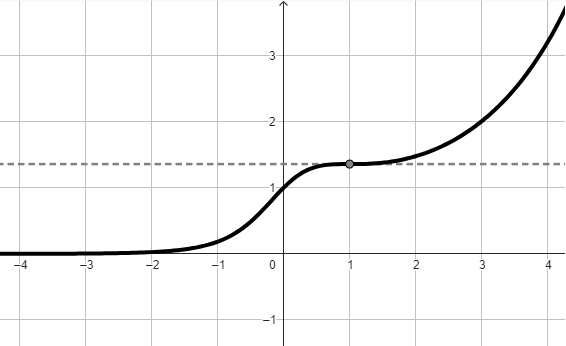

Soluzione:
Dominio:
\[
D = (-\infty\,,\,\,+\infty)
\]
Segno:
La funzione assume segno positivo per ogni valore \(x \in D\)
Comportamento in prossimità degli estremi del dominio - ricerca asintoti:
Si ha
\[
\lim_{x \to -\infty} f(x) = 0 \quad \lim_{x \to +\infty} f(x) = +\infty
\]
A motivo del primo limite, l'asse \(x\) è asintoto per il grafico della funzione.
Continuità
La funzione è continua nel suo dominio.
Derivabilità
La derivata della funzione
\[
f'(x) = \dfrac{e^x \, (x - 1)^2}{(x^2 + 1)^2}
\]
La funzione è derivabile in tutto il dominio \(D\).
Studio intervalli di monotonia:
La funzione è
-
crescente negli intervalli \((-\infty\,,\,\,0)\) e \((0\,,\,\,+infty)\)
-
stazionaria in \(x = 1\). In corrispondenza ti tale valore la funzione possiede
un flesso a tangente orizzontale
Grafico:

Consideriamo la funzione
\[
f(x) = ln\left(\dfrac{1}{x^2 + 1}\right)
\]
che è definita e continua su tutto \(\mathbb{R}\).
Studiare gli intervalli di monotonia della funzione.